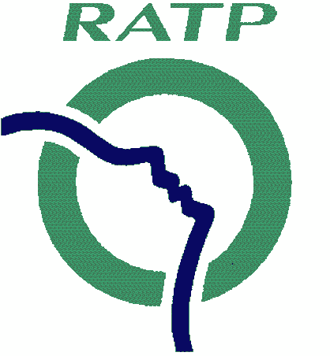
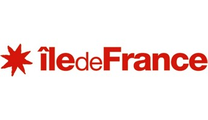
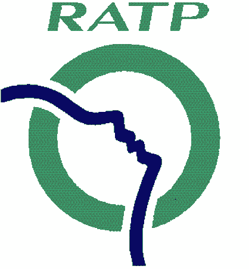
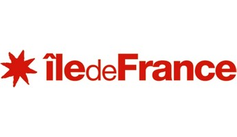
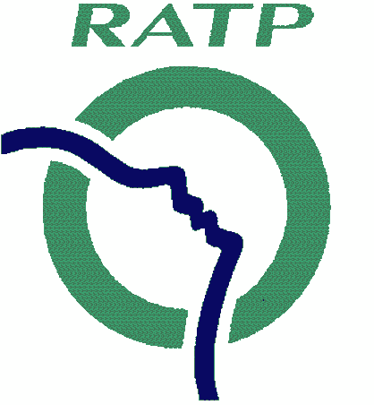
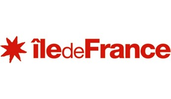

Logements, emplois, équipements, nature, donnez vous aussi votre vision pour l'Île-de-France 2030 !
 
Logements, emplois, équipements, nature, donnez vous aussi votre vision pour l'Île-de-France 2030 !
Le Schéma directeur Île-de-France 2030 porte le projet de la transition de l’aménagement régional. Il est conçu à l’aune du développement durable, dans la perspective des décennies à venir.
Il est établi en association avec l’État et le Conseil économique, social et environnemental régional, en concertation avec l’ensemble des collectivités et des acteurs d’Île-de-France, et en lien avec le Bassin
parisien. Il vise à l’attractivité et au rayonnement francilien et place au cœur de ses préoccupations le cadre de vie et le quotidien du Francilien de 2013 et de demain.
Car planifier l’avenir du développement territorial à l’horizon 2030, c’est apporter des réponses aux modes de vie actuels et futurs des Franciliennes et des Franciliens en termes de mobilité, d’habitat,
d’emploi, de relation à leur environnement, aux usages qu’ils ont et auront de leurs lieux de vie, en termes de pratiques sociales, culturelles,récréatives, sportives.
C’est apporter des réponses concrètes aux conditions de leur épanouissement individuel au sein d’une même communauté de destin en termes de déplacements, travail, formation, logement, environnement, services publics, équipements publics et privés. C’est aussi apporter des réponses aux conditions de cet épanouissement dans un monde où les disparités sociales et les inégalités territoriales,parfois les ségrégations, s’aggravent.
Mission : construire 70 000 logements par an et améliorer le parc existant pour résoudre la crise du logement.
Le logement, fondement de l’équité –sociale et territoriale– mais aussi de l’attractivité, appelle une production massive et de qualité, notamment dans le secteur social locatif. Face à l’aggravation de la crise du logement, l’objectif régional porte son ambition sur un effort de création de 70 000 logements par an en moyenne, soit près de 1,5 million de nouveaux logements à l’horizon 2030.
Viser la construction de 70 000 logements par an pour répondre aux besoins actuels de logements des ménages et anticiper leurs demandes futures est une urgence absolue, sociale et économique. C’est l’objectif premier du schéma directeur.
Mission : Créer 28 000 emplois par an, un objectif ambitieux pour lutter contre le chomage.
Sur 20 ans (1990-2010), en incluant la période de crise récente, la progression annuelle d’emplois se situe autour de 25 000 emplois par an. Ce n’est pas suffisant pour faire baisser le nombre de chômeurs et permettre au plus grand nombre d’accéder à un emploi stable et durable. La réduction des inégalités sociales passe par un objectif de création d’emploi important, cohérent avec les perspectives démographiques.
L’objectif est aussi de favoriser un rapprochement de la géographie de l’emploi et du développement de l’offre de logements afin d’améliorer les conditions d’accès à l’emploi des Franciliens et de réduire le temps moyen consacré aux navettes domicile-travail par les actifs de la région.
Mission : garantir l'accès à des équipements de qualité pour 50 000 nouveaux habitants.
Les équipements et les services publics jouent un rôle structurant pour l’aménagement de l’espace. Leur création ne se réduit pas à leur simple implantation, mais aussi à leur accompagnement par des services, une animation, un environnement qui les rendent proches et praticables pour tous les Franciliens.
Ils participent directement de la mixité sociale et de la mixité des fonctions urbaines, en encourageant une proximité et un équilibre entre logements, activités et équipements – que cela soit dans les espaces de densification ou d’extension urbaine – afin de garantir des lieux de vie fonctionnels et agréables à partager.
Mission : conforter l'écosystème naturel
L’Île-de-France a la chance d’être une grande région naturelle et agricole (53% du territoire régional sont occupés par la surface agricole).
L’agriculture francilienne est un atout majeur pour la région. Le contexte de transition écologique en fait, plus que jamais, un potentiel d’innovation et de renouvellement industriel.
L’Île-de-France compte environ 5000 exploitations agricoles,les trois quarts en grandes cultures (céréales, oléoprotéagineux, betteraves), qui cultivent plus de 90% de la surface agricole régionale. Les autres filières (élevage, maraîchage, arboriculture, horticulture, etc.) même si elles représentent seulement 10% des terres agricoles, apportent une diversité de productions essentielle pour l’Île-de-France.